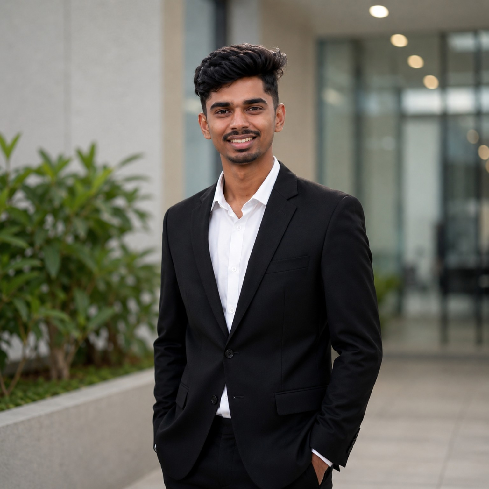

Backend-focused Software Engineer with 2+ years of experience building production-grade systems in Golang. Experienced in REST APIs, microservices, event-driven architecture, databases, security, Docker and CI/CD.

Working as a backend-focused software engineer, developing production systems using Golang and modern backend technologies.